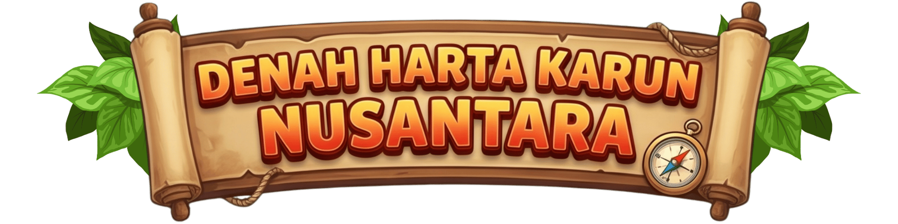

Penjelasan rute kompas...
Kamu berhasil membantu Robot Pramuka menaklukkan peta kompas pulau harta karun!
Pada peta standar, arah Utara (U) selalu menunjuk ke bagian Atas peta. Berikut adalah 8 arah mata angin (4 arah utama dan 4 arah antara) yang digunakan dalam petualangan ini:
1. Tujuan Pembelajaran
Murid mampu memahami delapan arah mata angin dan memanfaatkannya dalam permainan denah untuk menetukan arah dan navigasi perjalanan. 2. PengembangIkhwanul Furqon, M.Pd., Gr. (SMAN 7 Kerinci)
Redho Ade Putra, M.Pd., Gr. (SD IT Ibnu Abbas)3. Sumber dan Rujukan
a. Kusumawardani, A., Fatimah, K., dan Setianingsih, N.I. (2025) Ilmu Pengetahuan Alam dan Sosial untuk SD/MI Kelas III (Edisi Revisi). Kementerian Pendidikan Dasar dan Menengah.
b. Kusumawardani, A., Fatimah, K., dan Setianingsih, N.I. (2025) Panduan Guru Ilmu Pengetahuan Alam dan Sosial untuk SD/MI Kelas III (Edisi Revisi). Kementerian Pendidikan Dasar dan Menengah.
c. Kerangka dasar permainan, aset gambar dan suara semuanya menggunakan Gemini AI dan dilakukan kurasi untuk memastikan keakuratan materi dan produk.
📊 Statistik Bank Soal Saat Ini: Terdapat 30 Soal Relevan yang terbagi menjadi Level 1 (Soal 1–10), Level 2 (Soal 11–20), dan Level 3 (Soal 21–30) di dalam variabel QUESTION_BANK. Soal dibuat dengan Gemini AI dan dilakukan kurasi untuk memastikan kualitas soal sesuai dan layak untuk digunakan.